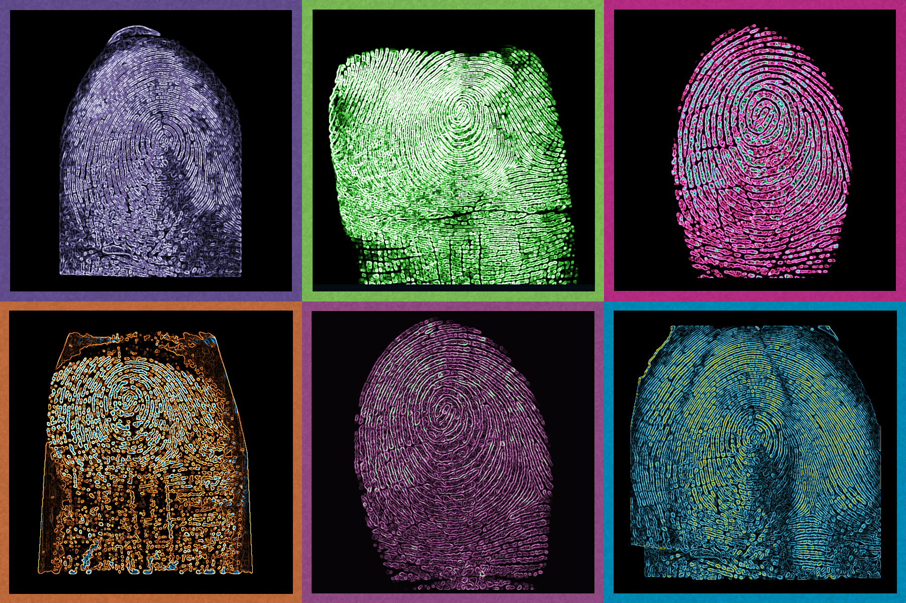

6.1.3
Security measures and authentication techniques
User accounts · a distinct identity for each user
- IdentifyThe account name states which identity is requesting access.
- AuthenticateCheck the evidence supplied for that account.
- Apply the account settingsLoad the permissions and record activity against that account.
| Account | Read marks | Modify marks | Delete marks |
|---|---|---|---|
| Teacher | Allow | Allow | Deny |
| Reviewer | Allow | Deny | Deny |
| Visitor | Deny | Deny | Deny |
Teaching noteAccount identity is required syllabus content. The selected security questions assess authentication or access rights; they are not presented as direct tests of every account-management detail.
Passwords · check secret evidence for the account
teacher.lee••••••••••••Incorrect password
Authentication failsReject the login. Do not open the protected record.
Correct password
Account authenticatedContinue to an access-rights check. Reading may be allowed while deletion is denied.
Before signing · message, digest and keys
- MessageThe actual document, such as “Student AB012: 46”.
- DigestA hashing algorithm produces a fixed-length value from the message.
- Digital signatureThe sender encrypts the digest using the sender’s private key. The receiver decrypts the signature using the corresponding sender public key.
Private key
Kept secret by the sender. Used to create the signature.
Trusted public key
Available to the receiver and reliably associated with the sender. Used to check the signature.
Digital signatures · create, send and verify
Interactive walkthrough
Create and verify a digital signature
Change the message in transit or select a different public key. Predict which comparison will fail.
Choose the inputs, predict the result, then step through the process.
Complete worked walkthrough (also available when JavaScript is disabled).
1 · Start with a readable message
Signing supplies evidence about the sender and the signed content. It does not hide the message.
SENDER · private key A stays here
MessageDeliver to room A2 · Calculate a message digest
Apply a hash function to the message. The digest value here illustrates the comparison.
SENDER · private key A stays here
MessageDeliver to room ADigest425746653 · Encrypt the digest to create the signature
In this simplified exam model, encrypt the digest with the sender’s private key to create the signature. The private key is not sent.
SENDER · private key A stays here
Digest42574665Private key AEncrypt digestSignatureSIG-A(42574665)4 · Send the message and signature
The attacker replaces only the message. The original signature travels unchanged.
SENDER · private key A stays here
Sent messageDeliver to room ASignatureSIG-A(42574665)RECEIVER · uses the trusted sender public key
Received messageDeliver to room BReceived signatureSIG-A(42574665)5 · Hash the received content
The receiver applies the same hash function to the actual received message.
RECEIVER · uses the trusted sender public key
Received messageDeliver to room BNew digest3F5741ACPublic key selectedA6 · Check the signature and compare
In the simplified model, decrypt the signature with sender public key A to recover the signed digest. Compare it with the newly calculated digest.
RECEIVER · uses the trusted sender public key
Digest recovered using public key42574665Received-content digest3F5741ACVerificationFAILReject the claim that this is the unchanged message signed by the claimed sender. Signing alone has not hidden either message.
The digest values and key labels illustrate the encrypt, decrypt and compare process. This demonstration is not a cryptographic implementation.
Biometrics · enrol first, then compare a new capture
Enrolment · first registration
- CaptureA sensor captures the legitimate user’s fingerprint or face.
- Extract featuresRecord distinguishing features as a reference template.
- AssociateStore the protected template with the correct account.
Authentication · later attempt
| Actual person | System decision | Meaning |
|---|---|---|
| Registered user | Rejected | False rejection, for example after a poor capture. |
| Impostor | Accepted | False acceptance: an incorrect match. |

Firewall · inspect traffic against rules
Interactive walkthrough
Trace a firewall decision
Change the traffic and follow the first matching rule. Compare a host firewall with a network-boundary firewall.
Choose the inputs, predict the result, then step through the process.
Complete worked walkthrough (also available when JavaScript is disabled).
1 · Choose the traffic path
This network firewall protects traffic crossing this network boundary.
EXTERNAL → PROTECTED
Trafficinbound TCP · public server · port 22 · new connectionNetwork firewallInspect this pathDestinationPending2 · Read packet and connection information
Compare the stated direction, destination, port, protocol and connection state with the configured rules.
REQUEST
ProtocolTCPDirectioninboundPort22ConnectionNewRule 1 · No match
Continue to the next rule in order.
EXTERNAL → PROTECTED
Trafficinbound TCP · public server · port 22 · new connectionNetwork firewallInspect this pathDestinationPendingFirst matching rule wins Rule Test Action This step 1 Traffic belongs to an already permitted connection ALLOW No match 2 New inbound TCP to the public web server, port 443 ALLOW Not evaluated 3 New outbound TCP to port 443 ALLOW Not evaluated 4 Anything else (default) DENY Not evaluated Rule 2 · No match
Continue to the next rule in order.
EXTERNAL → PROTECTED
Trafficinbound TCP · public server · port 22 · new connectionNetwork firewallInspect this pathDestinationPendingFirst matching rule wins Rule Test Action This step 1 Traffic belongs to an already permitted connection ALLOW No match 2 New inbound TCP to the public web server, port 443 ALLOW No match 3 New outbound TCP to port 443 ALLOW Not evaluated 4 Anything else (default) DENY Not evaluated Rule 3 · No match
Continue to the next rule in order.
EXTERNAL → PROTECTED
Trafficinbound TCP · public server · port 22 · new connectionNetwork firewallInspect this pathDestinationPendingFirst matching rule wins Rule Test Action This step 1 Traffic belongs to an already permitted connection ALLOW No match 2 New inbound TCP to the public web server, port 443 ALLOW No match 3 New outbound TCP to port 443 ALLOW No match 4 Anything else (default) DENY Not evaluated Rule 4 · First match
Apply DENY; later rules are not considered.
EXTERNAL → PROTECTED
Trafficinbound TCP · public server · port 22 · new connectionNetwork firewallInspect this pathDestinationPendingFirst matching rule wins Rule Test Action This step 1 Traffic belongs to an already permitted connection ALLOW No match 2 New inbound TCP to the public web server, port 443 ALLOW No match 3 New outbound TCP to port 443 ALLOW No match 4 Anything else (default) DENY MATCH Decision · Follow the actual path
DENY follows the firewall rules. It does not determine whether the data contains malware.
RESULT
Requestinbound TCP · public server · port 22 · new connectionMatched rule4OutcomeDENYThe request is blocked by the stated rules. This does not prove that every blocked request contains malware.
Anti-virus software · recognise and isolate infection
Interactive walkthrough
Scan, detect and contain a virus
Compare an older detection database with an updated one, then choose quarantine or deletion.
Choose the inputs, predict the result, then step through the process.
Complete worked walkthrough (also available when JavaScript is disabled).
1 · An executable arrives
The file has not been run. The selected sample is known to this simulation to contain a virus.
FILE → SCANNER → NORMAL EXECUTION
download.exeSample V2Older detection databaseV1File stateWaiting for scan2 · Maintain detection information
An update supplies V2 as well as V1. Unknown signatures can still be absent.
FILE → SCANNER → NORMAL EXECUTION
download.exeSample V2Detection databaseV1, V2File stateDatabase ready3 · Scan and compare
This demonstration compares file patterns with known virus signatures. Real anti-virus may also monitor suspicious behaviour.
FILE → SCANNER → NORMAL EXECUTION
download.exeSample V2Detection databaseV1, V2File statePattern matched4 · Interpret the detection result
A matching signature flags the infected file; stop normal execution.
FILE → SCANNER → NORMAL EXECUTION
download.exeSample V2Detection databaseV1, V2File stateExecution blocked5 · Contain the detected file
Quarantine isolates the file from normal use while retaining it for inspection.
FILE → SCANNER → NORMAL EXECUTION
download.exeSample V2Detection databaseV1, V2File stateQuarantined; cannot run normally6 · Choose the response
Keep the file isolated for review. Quarantine is not the same as repairing every damaged document.
FILE → SCANNER → NORMAL EXECUTION
download.exeSample V2Detection databaseV1, V2File stateQuarantined; retained for reviewQuarantine blocks normal execution of this file. Keep detection information current; recover damaged data from a suitable backup.
Anti-spyware · detect collection and stop further disclosure
Interactive walkthrough
Remove spyware and inspect the remaining disclosure
Watch the local installation and the third party’s copy separately. Removing one does not remove the other.
Choose the inputs, predict the result, then step through the process.
Complete worked walkthrough (also available when JavaScript is disabled).
1 · Hidden monitoring is active
The spyware captures activity without the user’s informed permission.
LOCAL COMPUTER
Monitoring componentCollecting keystrokesPassword statusOriginal passwordTHIRD PARTY
Previously received copyRecorded keystrokes retained2 · Scan for spyware
Anti-spyware checks software and activity for known monitoring components or suspicious behaviour.
LOCAL COMPUTER
Monitoring componentDetected by the scannerPassword statusOriginal passwordTHIRD PARTY
Previously received copyRecorded keystrokes retained3 · Stop and isolate it
Block the detected component to stop further collection and transmission.
LOCAL COMPUTER
Monitoring componentStopped and quarantinedPassword statusOriginal passwordTHIRD PARTY
Previously received copyRecorded keystrokes retained4 · Remove the component
Remove the detected installation. The remote copy is outside the local removal operation.
LOCAL COMPUTER
Monitoring componentRemovedPassword statusOriginal passwordTHIRD PARTY
Previously received copyRecorded keystrokes retained5 · Respond to disclosed information
If the password was sent out, the recipient can still know it after removal.
LOCAL COMPUTER
Monitoring componentRemoved; no further capturePassword statusOriginal password retainedTHIRD PARTY
Previously received copyRecorded keystrokes retainedLocal spyware removal cannot retrieve the already disclosed keystrokes. Replace the exposed password as part of recovery.
Encryption · protect readable content
Interactive walkthrough · confidentiality overview
Transform and recover a message
Edit the message and keys, then compare the sender’s plaintext with the recovered text.
Choose the inputs, predict the result, then step through the process.
Complete worked walkthrough (also available when JavaScript is disabled).
1 · Start with plaintext
Plaintext is the readable original message.
SENDER
PlaintextMeet at 8Encryption key132 · Apply an algorithm and key
The algorithm transforms the message using the key. This local demonstration uses byte-wise XOR so its result can be inspected.
ENCRYPT
PlaintextMeet at 8Algorithm + keyXOR with 13Ciphertext · hexadecimal40 68 68 79 2D 6C 79 2D 353 · Store or transmit ciphertext
An intercepted copy contains the transformed bytes. The legitimate recipient needs the appropriate key to recover the plaintext.
CHANNEL / STORAGE
Sender output40 68 68 79 2D 6C 79 2D 35Intercepted copy40 68 68 79 2D 6C 79 2D 35Decryption key sent here?No4 · Decrypt using the selected key
Apply the inverse operation using the decryption key. In this symmetric classroom model the correct key is the same value.
DECRYPT
Ciphertext40 68 68 79 2D 6C 79 2D 35Selected key13Recovered textMeet at 85 · Compare the recovered message
The recovered text matches the original in this run.
RESULT
OriginalMeet at 8RecoveredMeet at 8ComparisonMATCHThe matching key restores the plaintext. Encryption protects confidentiality when the key is protected; it does not by itself authenticate the sender or prove factual accuracy.
A small XOR model makes the transformation visible. It is not a secure production cipher or a required exam calculation.
Use complementary controls
| Control | Question it answers | What still needs another control |
|---|---|---|
| Account + authentication | Does this evidence match the claimed identity? | Which files may this account read or change? |
| Access rights | May this account perform this operation? | Is the supplied value accurate? |
| Firewall | May this traffic pass the configured rules? | Does permitted traffic contain malicious software? |
| Anti-virus / anti-spyware | Can this software recognise and stop the detected malware? | What about a new, unrecognised threat or information already disclosed? |
| Encryption | Can someone without the key read this copy? | Can the service run, and has a signed message changed? |
| Digital signature | Does the signed content verify against the sender’s trusted public key? | Can another person read an unencrypted message? |
Choose the measure for the stated risk, then explain its mechanism. Naming several products is not a substitute for describing how one protects the system or data.